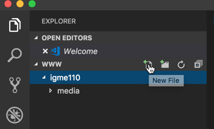
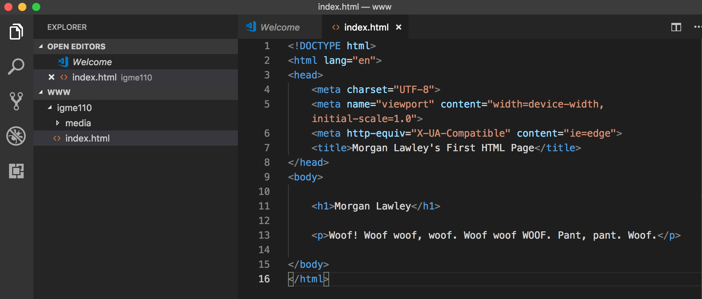
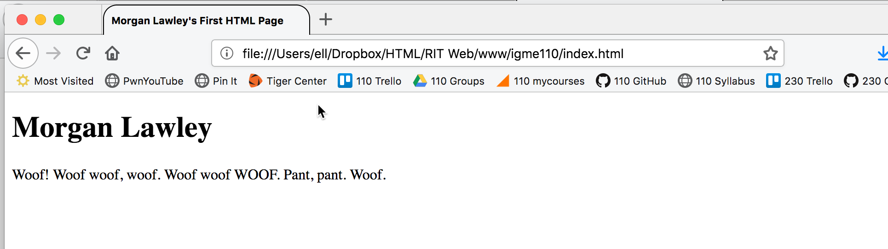
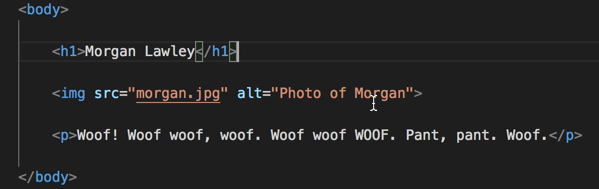
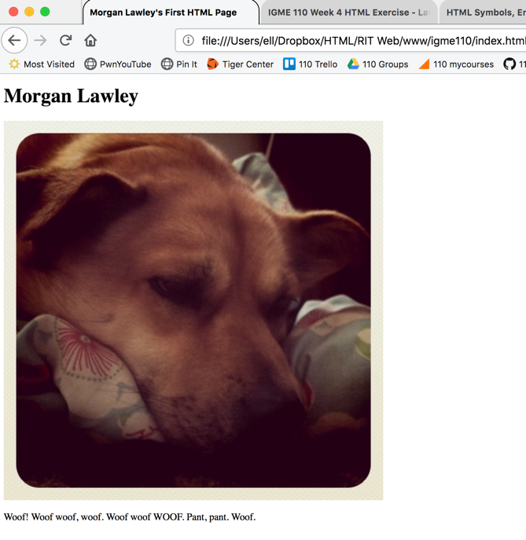
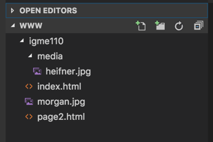
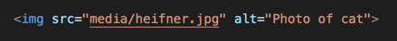
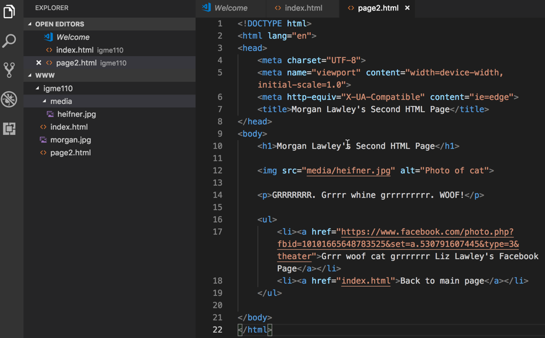
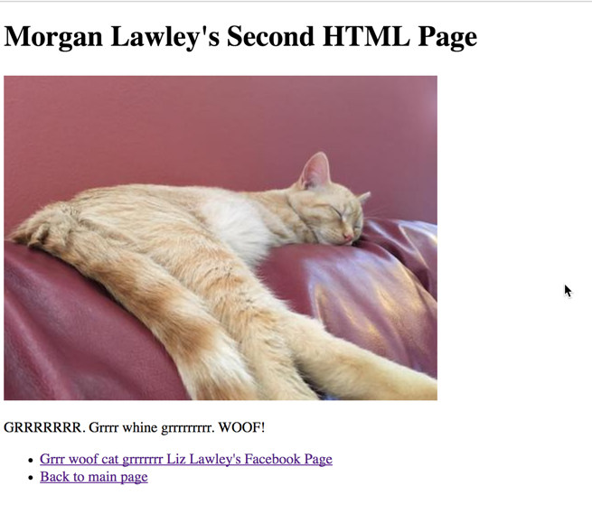

HTML Files & Markup Exercise (Week 4, Tuesday, Sept 18)
In today's exercise, you'll create the HTML document and file structure for a simple web page.
Part 1: Creating the Folder and File Structure
On your computer (or on a USB drive) create a folder called RIT Web. Inside that folder, create a folder called www. Inside of the www folder, create a folder called igme110. And inside of the igme110 folder, create a folder called media. The www folder represents your www directory on RIT's web server, which we'll talk about more next week. The igme110 folder is where all of your exercises and projects for this class will be stored.

Part 2: Creating Your First HTML Page
Open VS Code (or Brackets), select "Open..." from the File menu, and open the www folder that you just created. You should be able to see the igme110 folder in the file browser pane on the left. Select that folder, and then click on the "new file" icon to create a new file.
If you're using VS Code, you can insert the basic structure for an HTML page by typing html:5 and then pressing enter. If you're using Brackets (or another editor, refer back to the HTML Basics reading for how to create the basic structure for your document.
In the title element in the head of the document, put the text "Your Name's First 110 HTML Page".
In the body of the document, add a level 1 heading element containing your name. Below that, add a paragraph element that that includes a few lines about yourself. Save the file.
Open a web browser, and in the browser use the File→Open command to locate and display the index.html file you just created. (Or, if you have previewing capability in your editor, you can use that.) It should look something like this:

Part 3: Adding an Image
Find a Creative Commons-licensed image on the web, or an image that you own the rights to, that you’d like to include on your page. Save it in your igme110 folder.
You’re going to add code to your HTML to display the image on the web page. Add an img tag below the h1 element, and above the p element. For the src attribute, you're going to put the relative path to the image you downloaded. Because the image is in the same directory as your html file, the relative path is just the file name--if you don’t provide any other information besides a file name, the browser will assume that the image is in the same directory as the HTML file it’s displaying. That means this link will work when you're previewing your work on your hard drive, and once you've uploaded it to a web server. (We'll talk about that more next week.) The other required part of an img tag is the alt attribute, which contains text that will display if the browser is unable to display images. My image is a photo of my dog, Morgan, so my code now looks like this:
Save your file, go back to the browser window that you used to view it in the last section, and reload the file. It should now look something like this:
Reload your page in the browser; if your image isn’t showing up properly, ask for help now! (If it’s much too big to display properly on the page, try finding and downloading a smaller image from the web; on Thursday you'll learn how to resize the image properly using CSS).
Part 4: Image and Link References
In this section, we're going to look more closely at how to reference other files, both for images and for links.
When you're referencing another file on the same web server, you can (and typically should) use a relative reference, which points to the file using your current location as the starting point.
- If the file you're referencing is in the same directory as your web page, you just use the file name (as you did with the image on the index.html page).
- If the file is in a different directory, you need a directory path as well as the file name. (You can get more information about how to do this in MDN's Quick Primer on URLs and Paths.)
When you're referencing a file on a different web server, you must use what's called a "fully qualified URL"--which means you must include not just the server name and path to the file, but also the protocol (http:// or https://).
Start by creating another new HTML file in your igme230 directory, and name it page2.html. Give it a title of “Your Name’s Second HTML Page.” (Put that in the title tag, as well as in a level 1 heading on the page.)
Find another CC-licensed image to use on this page, and save it to the media directory inside the igme110 directory. (Copy down the URL for the source page, because you'll need that later.) Your file structure should look like this now:
To reference this image in your img src, you'll need to include the folder name along with the file name, like this:
Next, you're going to add two links to this page; one to the original source of the image you just used, and one back to your first (index) page.
The link to the site where you found the image will have the full URL (including the protocol) in the href attribute. That's considered a "fully qualified URL". To link to Google, for instance, you can't just use "google.com"--you have to use http://google.com/, or https://google.com. (Don't just link to a search engine or image archive, though--provide a link directly to the page where you found the image.)
To reference a page on your own site, you can use a relative path (as you did with the img tag on the index.html file). If the file is in the same directory, all you need is the file name.
Add both links to the bottom of your page, and make them list items in an unordered list, like this:
Here's how it should look in the browser:
Go back to your index.html file, and add a link to the source of the image on that page, and a link to the page2.html. (You can put these in a list again, or you can include them as part of a paragraph of text.)
Test both of your pages and make sure that the images and links work properly.
You need to have either the TA or the professor check your work to get credit for this. You can do this in class on Tuesday, during office hours on Wednesday, or at the start of class on Thursday.